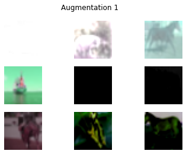
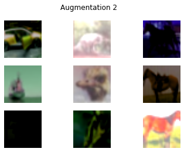
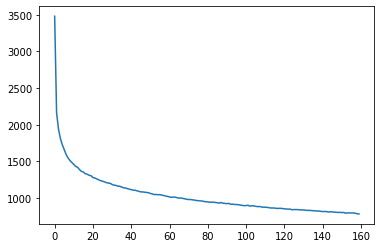

Barlow Twins for Contrastive SSL
Barlow Twins for Contrastive SSL
Author: Abhiraam Eranti
Date created: 11/4/21
Last modified: 12/20/21

Description: A keras implementation of Barlow Twins (constrastive SSL with redundancy reduction).
Introduction
Self-supervised learning (SSL) is a relatively novel technique in which a model learns from unlabeled data, and is often used when the data is corrupted or if there is very little of it. A practical use for SSL is to create intermediate embeddings that are learned from the data. These embeddings are based on the dataset itself, with similar images having similar embeddings, and vice versa. They are then attached to the rest of the model, which uses those embeddings as information and effectively learns and makes predictions properly. These embeddings, ideally, should contain as much information and insight about the data as possible, so that the model can make better predictions. However, a common problem that arises is that the model creates embeddings that are redundant. For example, if two images are similar, the model will create embeddings that are just a string of 1's, or some other value that contains repeating bits of information. This is no better than a one-hot encoding or just having one bit as the model’s representations; it defeats the purpose of the embeddings, as they do not learn as much about the dataset as possible. For other approaches, the solution to the problem was to carefully configure the model such that it tries not to be redundant.
Barlow Twins is a new approach to this problem; while other solutions mainly tackle the first goal of invariance (similar images have similar embeddings), the Barlow Twins method also prioritizes the goal of reducing redundancy.
It also has the advantage of being much simpler than other methods, and its model architecture is symmetric, meaning that both twins in the model do the same thing. It is also near state-of-the-art on imagenet, even exceeding methods like SimCLR.
One disadvantage of Barlow Twins is that it is heavily dependent on augmentation, suffering major performance decreases in accuracy without them.
TL, DR: Barlow twins creates representations that are:
- Invariant.
- Not redundant, and carry as much info about the dataset.
Also, it is simpler than other methods.
This notebook can train a Barlow Twins model and reach up to 64% validation accuracy on the CIFAR-10 dataset.

High-Level Theory
The model takes two versions of the same image(with different augmentations) as input. Then it takes a prediction of each of them, creating representations. They are then used to make a cross-correlation matrix.
Cross-correlation matrix:
(pred_1.T @ pred_2) / batch_size
The cross-correlation matrix measures the correlation between the output neurons in the two representations made by the model predictions of the two augmented versions of data. Ideally, a cross-correlation matrix should look like an identity matrix if the two images are the same.
When this happens, it means that the representations:
- Are invariant. The diagonal shows the correlation between each representation's neurons and its corresponding augmented one. Because the two versions come from the same image, the diagonal of the matrix should show that there is a strong correlation between them. If the images are different, there shouldn't be a diagonal.
- Do not show signs of redundancy. If the neurons show correlation with a non-diagonal neuron, it means that it is not correctly identifying similarities between the two augmented images. This means that it is redundant.
Here is a good way of understanding in pseudocode(information from the original paper):
c[i][i] = 1
c[i][j] = 0
where:
c is the cross-correlation matrix
i is the index of one representation's neuron
j is the index of the second representation's neuron
Taken from the original paper: Barlow Twins: Self-Supervised Learning via Redundancy Reduction
References
Paper: Barlow Twins: Self-Supervised Learning via Redundancy Reduction
Original Implementation: facebookresearch/barlowtwins
Setup
!pip install tensorflow-addons
import os
# slightly faster improvements, on the first epoch 30 second decrease and a 1-2 second
# decrease in epoch time. Overall saves approx. 5 min of training time
# Allocates two threads for a gpu private which allows more operations to be
# done faster
os.environ["TF_GPU_THREAD_MODE"] = "gpu_private"
import tensorflow as tf # framework
from tensorflow import keras # for tf.keras
import tensorflow_addons as tfa # LAMB optimizer and gaussian_blur_2d function
import numpy as np # np.random.random
import matplotlib.pyplot as plt # graphs
import datetime # tensorboard logs naming
# XLA optimization for faster performance(up to 10-15 minutes total time saved)
tf.config.optimizer.set_jit(True)
['Requirement already satisfied: tensorflow-addons in /usr/local/lib/python3.7/dist-packages (0.15.0)',
'Requirement already satisfied: typeguard>=2.7 in /usr/local/lib/python3.7/dist-packages (from tensorflow-addons) (2.7.1)']
Load the CIFAR-10 dataset
[
(train_features, train_labels),
(test_features, test_labels),
] = keras.datasets.cifar10.load_data()
train_features = train_features / 255.0
test_features = test_features / 255.0
Necessary Hyperparameters
# Batch size of dataset
BATCH_SIZE = 512
# Width and height of image
IMAGE_SIZE = 32
Augmentation Utilities
The Barlow twins algorithm is heavily reliant on Augmentation. One unique feature of the method is that sometimes, augmentations probabilistically occur.
Augmentations
- RandomToGrayscale: randomly applies grayscale to image 20% of the time
- RandomColorJitter: randomly applies color jitter 80% of the time
- RandomFlip: randomly flips image horizontally 50% of the time
- RandomResizedCrop: randomly crops an image to a random size then resizes. This happens 100% of the time
- RandomSolarize: randomly applies solarization to an image 20% of the time
- RandomBlur: randomly blurs an image 20% of the time
class Augmentation(keras.layers.Layer):
"""Base augmentation class.
Base augmentation class. Contains the random_execute method.
Methods:
random_execute: method that returns true or false based
on a probability. Used to determine whether an augmentation
will be run.
"""
def __init__(self):
super().__init__()
@tf.function
def random_execute(self, prob: float) -> bool:
"""random_execute function.
Arguments:
prob: a float value from 0-1 that determines the
probability.
Returns:
returns true or false based on the probability.
"""
return tf.random.uniform([], minval=0, maxval=1) < prob
class RandomToGrayscale(Augmentation):
"""RandomToGrayscale class.
RandomToGrayscale class. Randomly makes an image
grayscaled based on the random_execute method. There
is a 20% chance that an image will be grayscaled.
Methods:
call: method that grayscales an image 20% of
the time.
"""
@tf.function
def call(self, x: tf.Tensor) -> tf.Tensor:
"""call function.
Arguments:
x: a tf.Tensor representing the image.
Returns:
returns a grayscaled version of the image 20% of the time
and the original image 80% of the time.
"""
if self.random_execute(0.2):
x = tf.image.rgb_to_grayscale(x)
x = tf.tile(x, [1, 1, 3])
return x
class RandomColorJitter(Augmentation):
"""RandomColorJitter class.
RandomColorJitter class. Randomly adds color jitter to an image.
Color jitter means to add random brightness, contrast,
saturation, and hue to an image. There is a 80% chance that an
image will be randomly color-jittered.
Methods:
call: method that color-jitters an image 80% of
the time.
"""
@tf.function
def call(self, x: tf.Tensor) -> tf.Tensor:
"""call function.
Adds color jitter to image, including:
Brightness change by a max-delta of 0.8
Contrast change by a max-delta of 0.8
Saturation change by a max-delta of 0.8
Hue change by a max-delta of 0.2
Originally, the same deltas of the original paper
were used, but a performance boost of almost 2% was found
when doubling them.
Arguments:
x: a tf.Tensor representing the image.
Returns:
returns a color-jittered version of the image 80% of the time
and the original image 20% of the time.
"""
if self.random_execute(0.8):
x = tf.image.random_brightness(x, 0.8)
x = tf.image.random_contrast(x, 0.4, 1.6)
x = tf.image.random_saturation(x, 0.4, 1.6)
x = tf.image.random_hue(x, 0.2)
return x
class RandomFlip(Augmentation):
"""RandomFlip class.
RandomFlip class. Randomly flips image horizontally. There is a 50%
chance that an image will be randomly flipped.
Methods:
call: method that flips an image 50% of
the time.
"""
@tf.function
def call(self, x: tf.Tensor) -> tf.Tensor:
"""call function.
Randomly flips the image.
Arguments:
x: a tf.Tensor representing the image.
Returns:
returns a flipped version of the image 50% of the time
and the original image 50% of the time.
"""
if self.random_execute(0.5):
x = tf.image.random_flip_left_right(x)
return x
class RandomResizedCrop(Augmentation):
"""RandomResizedCrop class.
RandomResizedCrop class. Randomly crop an image to a random size,
then resize the image back to the original size.
Attributes:
image_size: The dimension of the image
Methods:
__call__: method that does random resize crop to the image.
"""
def __init__(self, image_size):
super().__init__()
self.image_size = image_size
def call(self, x: tf.Tensor) -> tf.Tensor:
"""call function.
Does random resize crop by randomly cropping an image to a random
size 75% - 100% the size of the image. Then resizes it.
Arguments:
x: a tf.Tensor representing the image.
Returns:
returns a randomly cropped image.
"""
rand_size = tf.random.uniform(
shape=[],
minval=int(0.75 * self.image_size),
maxval=1 * self.image_size,
dtype=tf.int32,
)
crop = tf.image.random_crop(x, (rand_size, rand_size, 3))
crop_resize = tf.image.resize(crop, (self.image_size, self.image_size))
return crop_resize
class RandomSolarize(Augmentation):
"""RandomSolarize class.
RandomSolarize class. Randomly solarizes an image.
Solarization is when pixels accidentally flip to an inverted state.
Methods:
call: method that does random solarization 20% of the time.
"""
@tf.function
def call(self, x: tf.Tensor) -> tf.Tensor:
"""call function.
Randomly solarizes the image.
Arguments:
x: a tf.Tensor representing the image.
Returns:
returns a solarized version of the image 20% of the time
and the original image 80% of the time.
"""
if self.random_execute(0.2):
# flips abnormally low pixels to abnormally high pixels
x = tf.where(x < 10, x, 255 - x)
return x
class RandomBlur(Augmentation):
"""RandomBlur class.
RandomBlur class. Randomly blurs an image.
Methods:
call: method that does random blur 20% of the time.
"""
@tf.function
def call(self, x: tf.Tensor) -> tf.Tensor:
"""call function.
Randomly solarizes the image.
Arguments:
x: a tf.Tensor representing the image.
Returns:
returns a blurred version of the image 20% of the time
and the original image 80% of the time.
"""
if self.random_execute(0.2):
s = np.random.random()
return tfa.image.gaussian_filter2d(image=x, sigma=s)
return x
class RandomAugmentor(keras.Model):
"""RandomAugmentor class.
RandomAugmentor class. Chains all the augmentations into
one pipeline.
Attributes:
image_size: An integer represing the width and height
of the image. Designed to be used for square images.
random_resized_crop: Instance variable representing the
RandomResizedCrop layer.
random_flip: Instance variable representing the
RandomFlip layer.
random_color_jitter: Instance variable representing the
RandomColorJitter layer.
random_blur: Instance variable representing the
RandomBlur layer
random_to_grayscale: Instance variable representing the
RandomToGrayscale layer
random_solarize: Instance variable representing the
RandomSolarize layer
Methods:
call: chains layers in pipeline together
"""
def __init__(self, image_size: int):
super().__init__()
self.image_size = image_size
self.random_resized_crop = RandomResizedCrop(image_size)
self.random_flip = RandomFlip()
self.random_color_jitter = RandomColorJitter()
self.random_blur = RandomBlur()
self.random_to_grayscale = RandomToGrayscale()
self.random_solarize = RandomSolarize()
def call(self, x: tf.Tensor) -> tf.Tensor:
x = self.random_resized_crop(x)
x = self.random_flip(x)
x = self.random_color_jitter(x)
x = self.random_blur(x)
x = self.random_to_grayscale(x)
x = self.random_solarize(x)
x = tf.clip_by_value(x, 0, 1)
return x
bt_augmentor = RandomAugmentor(IMAGE_SIZE)
Data Loading
A class that creates the barlow twins' dataset.
The dataset consists of two copies of each image, with each copy receiving different augmentations.
class BTDatasetCreator:
"""Barlow twins dataset creator class.
BTDatasetCreator class. Responsible for creating the
barlow twins' dataset.
Attributes:
options: tf.data.Options needed to configure a setting
that may improve performance.
seed: random seed for shuffling. Used to synchronize two
augmented versions.
augmentor: augmentor used for augmentation.
Methods:
__call__: creates barlow dataset.
augmented_version: creates 1 half of the dataset.
"""
def __init__(self, augmentor: RandomAugmentor, seed: int = 1024):
self.options = tf.data.Options()
self.options.threading.max_intra_op_parallelism = 1
self.seed = seed
self.augmentor = augmentor
def augmented_version(self, ds: list) -> tf.data.Dataset:
return (
tf.data.Dataset.from_tensor_slices(ds)
.shuffle(1000, seed=self.seed)
.map(self.augmentor, num_parallel_calls=tf.data.AUTOTUNE)
.batch(BATCH_SIZE, drop_remainder=True)
.prefetch(tf.data.AUTOTUNE)
.with_options(self.options)
)
def __call__(self, ds: list) -> tf.data.Dataset:
a1 = self.augmented_version(ds)
a2 = self.augmented_version(ds)
return tf.data.Dataset.zip((a1, a2)).with_options(self.options)
augment_versions = BTDatasetCreator(bt_augmentor)(train_features)
View examples of dataset.
sample_augment_versions = iter(augment_versions)
def plot_values(batch: tuple):
fig, axs = plt.subplots(3, 3)
fig1, axs1 = plt.subplots(3, 3)
fig.suptitle("Augmentation 1")
fig1.suptitle("Augmentation 2")
a1, a2 = batch
# plots images on both tables
for i in range(3):
for j in range(3):
# CHANGE(add / 255)
axs[i][j].imshow(a1[3 * i + j])
axs[i][j].axis("off")
axs1[i][j].imshow(a2[3 * i + j])
axs1[i][j].axis("off")
plt.show()
plot_values(next(sample_augment_versions))


Pseudocode of loss and model
The following sections follow the original author's pseudocode containing both model and loss functions(see diagram below). Also contains a reference of variables used.

Reference:
y_a: first augmented version of original image.
y_b: second augmented version of original image.
z_a: model representation(embeddings) of y_a.
z_b: model representation(embeddings) of y_b.
z_a_norm: normalized z_a.
z_b_norm: normalized z_b.
c: cross correlation matrix.
c_diff: diagonal portion of loss(invariance term).
off_diag: off-diagonal portion of loss(redundancy reduction term).
BarlowLoss: barlow twins model's loss function
Barlow Twins uses the cross correlation matrix for its loss. There are two parts to the loss function:
- The invariance term(diagonal). This part is used to make the diagonals of the
matrix into 1s. When this is the case, the matrix shows that the images are
correlated(same).
- The loss function subtracts 1 from the diagonal and squares the values.
- The redundancy reduction term(off-diagonal). Here, the barlow twins loss
function aims to make these values zero. As mentioned before, it is redundant if the
representation neurons are correlated with values that are not on the diagonal.
- Off diagonals are squared.
After this the two parts are summed together.
class BarlowLoss(keras.losses.Loss):
"""BarlowLoss class.
BarlowLoss class. Creates a loss function based on the cross-correlation
matrix.
Attributes:
batch_size: the batch size of the dataset
lambda_amt: the value for lambda(used in cross_corr_matrix_loss)
Methods:
__init__: gets instance variables
call: gets the loss based on the cross-correlation matrix
make_diag_zeros: Used in calculating off-diagonal section
of loss function; makes diagonals zeros.
cross_corr_matrix_loss: creates loss based on cross correlation
matrix.
"""
def __init__(self, batch_size: int):
"""__init__ method.
Gets the instance variables
Arguments:
batch_size: An integer value representing the batch size of the
dataset. Used for cross correlation matrix calculation.
"""
super().__init__()
self.lambda_amt = 5e-3
self.batch_size = batch_size
def get_off_diag(self, c: tf.Tensor) -> tf.Tensor:
"""get_off_diag method.
Makes the diagonals of the cross correlation matrix zeros.
This is used in the off-diagonal portion of the loss function,
where we take the squares of the off-diagonal values and sum them.
Arguments:
c: A tf.tensor that represents the cross correlation
matrix
Returns:
Returns a tf.tensor which represents the cross correlation
matrix with its diagonals as zeros.
"""
zero_diag = tf.zeros(c.shape[-1])
return tf.linalg.set_diag(c, zero_diag)
def cross_corr_matrix_loss(self, c: tf.Tensor) -> tf.Tensor:
"""cross_corr_matrix_loss method.
Gets the loss based on the cross correlation matrix.
We want the diagonals to be 1's and everything else to be
zeros to show that the two augmented images are similar.
Loss function procedure:
take the diagonal of the cross-correlation matrix, subtract by 1,
and square that value so no negatives.
Take the off-diagonal of the cc-matrix(see get_off_diag()),
square those values to get rid of negatives and increase the value,
and multiply it by a lambda to weight it such that it is of equal
value to the optimizer as the diagonal(there are more values off-diag
then on-diag)
Take the sum of the first and second parts and then sum them together.
Arguments:
c: A tf.tensor that represents the cross correlation
matrix
Returns:
Returns a tf.tensor which represents the cross correlation
matrix with its diagonals as zeros.
"""
# subtracts diagonals by one and squares them(first part)
c_diff = tf.pow(tf.linalg.diag_part(c) - 1, 2)
# takes off diagonal, squares it, multiplies with lambda(second part)
off_diag = tf.pow(self.get_off_diag(c), 2) * self.lambda_amt
# sum first and second parts together
loss = tf.reduce_sum(c_diff) + tf.reduce_sum(off_diag)
return loss
def normalize(self, output: tf.Tensor) -> tf.Tensor:
"""normalize method.
Normalizes the model prediction.
Arguments:
output: the model prediction.
Returns:
Returns a normalized version of the model prediction.
"""
return (output - tf.reduce_mean(output, axis=0)) / tf.math.reduce_std(
output, axis=0
)
def cross_corr_matrix(self, z_a_norm: tf.Tensor, z_b_norm: tf.Tensor) -> tf.Tensor:
"""cross_corr_matrix method.
Creates a cross correlation matrix from the predictions.
It transposes the first prediction and multiplies this with
the second, creating a matrix with shape (n_dense_units, n_dense_units).
See build_twin() for more info. Then it divides this with the
batch size.
Arguments:
z_a_norm: A normalized version of the first prediction.
z_b_norm: A normalized version of the second prediction.
Returns:
Returns a cross correlation matrix.
"""
return (tf.transpose(z_a_norm) @ z_b_norm) / self.batch_size
def call(self, z_a: tf.Tensor, z_b: tf.Tensor) -> tf.Tensor:
"""call method.
Makes the cross-correlation loss. Uses the CreateCrossCorr
class to make the cross corr matrix, then finds the loss and
returns it(see cross_corr_matrix_loss()).
Arguments:
z_a: The prediction of the first set of augmented data.
z_b: the prediction of the second set of augmented data.
Returns:
Returns a (rank-0) tf.Tensor that represents the loss.
"""
z_a_norm, z_b_norm = self.normalize(z_a), self.normalize(z_b)
c = self.cross_corr_matrix(z_a_norm, z_b_norm)
loss = self.cross_corr_matrix_loss(c)
return loss
Barlow Twins' Model Architecture
The model has two parts:
- The encoder network, which is a resnet-34.
- The projector network, which creates the model embeddings.
- This consists of an MLP with 3 dense-batchnorm-relu layers.
Resnet encoder network implementation:
class ResNet34:
"""Resnet34 class.
Responsible for the Resnet 34 architecture.
Modified from
https://www.analyticsvidhya.com/blog/2021/08/how-to-code-your-resnet-from-scratch-in-tensorflow/#h2_2.
https://www.analyticsvidhya.com/blog/2021/08/how-to-code-your-resnet-from-scratch-in-tensorflow/#h2_2.
View their website for more information.
"""
def identity_block(self, x, filter):
# copy tensor to variable called x_skip
x_skip = x
# Layer 1
x = tf.keras.layers.Conv2D(filter, (3, 3), padding="same")(x)
x = tf.keras.layers.BatchNormalization(axis=3)(x)
x = tf.keras.layers.Activation("relu")(x)
# Layer 2
x = tf.keras.layers.Conv2D(filter, (3, 3), padding="same")(x)
x = tf.keras.layers.BatchNormalization(axis=3)(x)
# Add Residue
x = tf.keras.layers.Add()([x, x_skip])
x = tf.keras.layers.Activation("relu")(x)
return x
def convolutional_block(self, x, filter):
# copy tensor to variable called x_skip
x_skip = x
# Layer 1
x = tf.keras.layers.Conv2D(filter, (3, 3), padding="same", strides=(2, 2))(x)
x = tf.keras.layers.BatchNormalization(axis=3)(x)
x = tf.keras.layers.Activation("relu")(x)
# Layer 2
x = tf.keras.layers.Conv2D(filter, (3, 3), padding="same")(x)
x = tf.keras.layers.BatchNormalization(axis=3)(x)
# Processing Residue with conv(1,1)
x_skip = tf.keras.layers.Conv2D(filter, (1, 1), strides=(2, 2))(x_skip)
# Add Residue
x = tf.keras.layers.Add()([x, x_skip])
x = tf.keras.layers.Activation("relu")(x)
return x
def __call__(self, shape=(32, 32, 3)):
# Step 1 (Setup Input Layer)
x_input = tf.keras.layers.Input(shape)
x = tf.keras.layers.ZeroPadding2D((3, 3))(x_input)
# Step 2 (Initial Conv layer along with maxPool)
x = tf.keras.layers.Conv2D(64, kernel_size=7, strides=2, padding="same")(x)
x = tf.keras.layers.BatchNormalization()(x)
x = tf.keras.layers.Activation("relu")(x)
x = tf.keras.layers.MaxPool2D(pool_size=3, strides=2, padding="same")(x)
# Define size of sub-blocks and initial filter size
block_layers = [3, 4, 6, 3]
filter_size = 64
# Step 3 Add the Resnet Blocks
for i in range(4):
if i == 0:
# For sub-block 1 Residual/Convolutional block not needed
for j in range(block_layers[i]):
x = self.identity_block(x, filter_size)
else:
# One Residual/Convolutional Block followed by Identity blocks
# The filter size will go on increasing by a factor of 2
filter_size = filter_size * 2
x = self.convolutional_block(x, filter_size)
for j in range(block_layers[i] - 1):
x = self.identity_block(x, filter_size)
# Step 4 End Dense Network
x = tf.keras.layers.AveragePooling2D((2, 2), padding="same")(x)
x = tf.keras.layers.Flatten()(x)
model = tf.keras.models.Model(inputs=x_input, outputs=x, name="ResNet34")
return model
Projector network:
def build_twin() -> keras.Model:
"""build_twin method.
Builds a barlow twins model consisting of an encoder(resnet-34)
and a projector, which generates embeddings for the images
Returns:
returns a barlow twins model
"""
# number of dense neurons in the projector
n_dense_neurons = 5000
# encoder network
resnet = ResNet34()()
last_layer = resnet.layers[-1].output
# intermediate layers of the projector network
n_layers = 2
for i in range(n_layers):
dense = tf.keras.layers.Dense(n_dense_neurons, name=f"projector_dense_{i}")
if i == 0:
x = dense(last_layer)
else:
x = dense(x)
x = tf.keras.layers.BatchNormalization(name=f"projector_bn_{i}")(x)
x = tf.keras.layers.ReLU(name=f"projector_relu_{i}")(x)
x = tf.keras.layers.Dense(n_dense_neurons, name=f"projector_dense_{n_layers}")(x)
model = keras.Model(resnet.input, x)
return model
Training Loop Model
See pseudocode for reference.
class BarlowModel(keras.Model):
"""BarlowModel class.
BarlowModel class. Responsible for making predictions and handling
gradient descent with the optimizer.
Attributes:
model: the barlow model architecture.
loss_tracker: the loss metric.
Methods:
train_step: one train step; do model predictions, loss, and
optimizer step.
metrics: Returns metrics.
"""
def __init__(self):
super().__init__()
self.model = build_twin()
self.loss_tracker = keras.metrics.Mean(name="loss")
@property
def metrics(self):
return [self.loss_tracker]
def train_step(self, batch: tf.Tensor) -> tf.Tensor:
"""train_step method.
Do one train step. Make model predictions, find loss, pass loss to
optimizer, and make optimizer apply gradients.
Arguments:
batch: one batch of data to be given to the loss function.
Returns:
Returns a dictionary with the loss metric.
"""
# get the two augmentations from the batch
y_a, y_b = batch
with tf.GradientTape() as tape:
# get two versions of predictions
z_a, z_b = self.model(y_a, training=True), self.model(y_b, training=True)
loss = self.loss(z_a, z_b)
grads_model = tape.gradient(loss, self.model.trainable_variables)
self.optimizer.apply_gradients(zip(grads_model, self.model.trainable_variables))
self.loss_tracker.update_state(loss)
return {"loss": self.loss_tracker.result()}
Model Training
- Used the LAMB optimizer, instead of ADAM or SGD.
- Similar to the LARS optimizer used in the paper, and lets the model converge much faster than other methods.
- Expected training time: 1 hour 30 min. Go and eat a snack or take a nap or something.
# sets up model, optimizer, loss
bm = BarlowModel()
# chose the LAMB optimizer due to high batch sizes. Converged MUCH faster
# than ADAM or SGD
optimizer = tfa.optimizers.LAMB()
loss = BarlowLoss(BATCH_SIZE)
bm.compile(optimizer=optimizer, loss=loss)
# Expected training time: 1 hours 30 min
history = bm.fit(augment_versions, epochs=160)
plt.plot(history.history["loss"])
plt.show()
Epoch 1/160
97/97 [==============================] - 89s 294ms/step - loss: 3480.7588
Epoch 2/160
97/97 [==============================] - 29s 294ms/step - loss: 2163.4197
Epoch 3/160
97/97 [==============================] - 29s 294ms/step - loss: 1939.0248
Epoch 4/160
97/97 [==============================] - 29s 294ms/step - loss: 1810.4800
Epoch 5/160
97/97 [==============================] - 29s 294ms/step - loss: 1725.7401
Epoch 6/160
97/97 [==============================] - 29s 294ms/step - loss: 1658.2261
Epoch 7/160
97/97 [==============================] - 29s 294ms/step - loss: 1592.0747
Epoch 8/160
97/97 [==============================] - 29s 294ms/step - loss: 1545.2579
Epoch 9/160
97/97 [==============================] - 29s 294ms/step - loss: 1509.6631
Epoch 10/160
97/97 [==============================] - 29s 294ms/step - loss: 1484.1141
Epoch 11/160
97/97 [==============================] - 29s 293ms/step - loss: 1456.8615
Epoch 12/160
97/97 [==============================] - 29s 294ms/step - loss: 1430.0315
Epoch 13/160
97/97 [==============================] - 29s 294ms/step - loss: 1418.1147
Epoch 14/160
97/97 [==============================] - 29s 294ms/step - loss: 1385.7473
Epoch 15/160
97/97 [==============================] - 29s 294ms/step - loss: 1362.8176
Epoch 16/160
97/97 [==============================] - 29s 294ms/step - loss: 1353.6069
Epoch 17/160
97/97 [==============================] - 29s 294ms/step - loss: 1331.3687
Epoch 18/160
97/97 [==============================] - 29s 294ms/step - loss: 1323.1509
Epoch 19/160
97/97 [==============================] - 29s 294ms/step - loss: 1309.3015
Epoch 20/160
97/97 [==============================] - 29s 294ms/step - loss: 1303.2418
Epoch 21/160
97/97 [==============================] - 29s 294ms/step - loss: 1278.0450
Epoch 22/160
97/97 [==============================] - 29s 294ms/step - loss: 1272.2640
Epoch 23/160
97/97 [==============================] - 29s 294ms/step - loss: 1259.4225
Epoch 24/160
97/97 [==============================] - 29s 294ms/step - loss: 1246.8461
Epoch 25/160
97/97 [==============================] - 29s 294ms/step - loss: 1235.0269
Epoch 26/160
97/97 [==============================] - 29s 295ms/step - loss: 1228.4196
Epoch 27/160
97/97 [==============================] - 29s 295ms/step - loss: 1220.0851
Epoch 28/160
97/97 [==============================] - 29s 294ms/step - loss: 1208.5876
Epoch 29/160
97/97 [==============================] - 29s 294ms/step - loss: 1203.1449
Epoch 30/160
97/97 [==============================] - 29s 294ms/step - loss: 1199.5155
Epoch 31/160
97/97 [==============================] - 29s 294ms/step - loss: 1183.9818
Epoch 32/160
97/97 [==============================] - 29s 294ms/step - loss: 1173.9989
Epoch 33/160
97/97 [==============================] - 29s 294ms/step - loss: 1171.3789
Epoch 34/160
97/97 [==============================] - 29s 294ms/step - loss: 1160.8230
Epoch 35/160
97/97 [==============================] - 29s 294ms/step - loss: 1159.4148
Epoch 36/160
97/97 [==============================] - 29s 294ms/step - loss: 1148.4250
Epoch 37/160
97/97 [==============================] - 29s 294ms/step - loss: 1138.1802
Epoch 38/160
97/97 [==============================] - 29s 294ms/step - loss: 1135.9139
Epoch 39/160
97/97 [==============================] - 29s 294ms/step - loss: 1126.8186
Epoch 40/160
97/97 [==============================] - 29s 294ms/step - loss: 1119.6173
Epoch 41/160
97/97 [==============================] - 29s 293ms/step - loss: 1113.9358
Epoch 42/160
97/97 [==============================] - 29s 294ms/step - loss: 1106.0131
Epoch 43/160
97/97 [==============================] - 29s 294ms/step - loss: 1104.7386
Epoch 44/160
97/97 [==============================] - 29s 294ms/step - loss: 1097.7909
Epoch 45/160
97/97 [==============================] - 29s 294ms/step - loss: 1091.4229
Epoch 46/160
97/97 [==============================] - 29s 293ms/step - loss: 1082.3530
Epoch 47/160
97/97 [==============================] - 29s 294ms/step - loss: 1081.9459
Epoch 48/160
97/97 [==============================] - 29s 294ms/step - loss: 1078.5864
Epoch 49/160
97/97 [==============================] - 29s 293ms/step - loss: 1075.9255
Epoch 50/160
97/97 [==============================] - 29s 293ms/step - loss: 1070.9954
Epoch 51/160
97/97 [==============================] - 29s 294ms/step - loss: 1061.1058
Epoch 52/160
97/97 [==============================] - 29s 294ms/step - loss: 1055.0126
Epoch 53/160
97/97 [==============================] - 29s 294ms/step - loss: 1045.7827
Epoch 54/160
97/97 [==============================] - 29s 293ms/step - loss: 1047.5338
Epoch 55/160
97/97 [==============================] - 29s 294ms/step - loss: 1043.9012
Epoch 56/160
97/97 [==============================] - 29s 294ms/step - loss: 1044.5902
Epoch 57/160
97/97 [==============================] - 29s 294ms/step - loss: 1038.3389
Epoch 58/160
97/97 [==============================] - 29s 294ms/step - loss: 1032.1195
Epoch 59/160
97/97 [==============================] - 29s 294ms/step - loss: 1026.5962
Epoch 60/160
97/97 [==============================] - 29s 294ms/step - loss: 1018.2954
Epoch 61/160
97/97 [==============================] - 29s 294ms/step - loss: 1014.7681
Epoch 62/160
97/97 [==============================] - 29s 294ms/step - loss: 1007.7906
Epoch 63/160
97/97 [==============================] - 29s 294ms/step - loss: 1012.9134
Epoch 64/160
97/97 [==============================] - 29s 294ms/step - loss: 1009.7881
Epoch 65/160
97/97 [==============================] - 29s 294ms/step - loss: 1003.2436
Epoch 66/160
97/97 [==============================] - 29s 293ms/step - loss: 997.0688
Epoch 67/160
97/97 [==============================] - 29s 294ms/step - loss: 999.1620
Epoch 68/160
97/97 [==============================] - 29s 294ms/step - loss: 993.2636
Epoch 69/160
97/97 [==============================] - 29s 295ms/step - loss: 988.5142
Epoch 70/160
97/97 [==============================] - 29s 294ms/step - loss: 981.5876
Epoch 71/160
97/97 [==============================] - 29s 294ms/step - loss: 978.3053
Epoch 72/160
97/97 [==============================] - 29s 295ms/step - loss: 978.8599
Epoch 73/160
97/97 [==============================] - 29s 294ms/step - loss: 973.7569
Epoch 74/160
97/97 [==============================] - 29s 294ms/step - loss: 971.2402
Epoch 75/160
97/97 [==============================] - 29s 295ms/step - loss: 964.2864
Epoch 76/160
97/97 [==============================] - 29s 294ms/step - loss: 963.4999
Epoch 77/160
97/97 [==============================] - 29s 294ms/step - loss: 959.7264
Epoch 78/160
97/97 [==============================] - 29s 294ms/step - loss: 958.1680
Epoch 79/160
97/97 [==============================] - 29s 295ms/step - loss: 952.0243
Epoch 80/160
97/97 [==============================] - 29s 295ms/step - loss: 947.8354
Epoch 81/160
97/97 [==============================] - 29s 295ms/step - loss: 945.8139
Epoch 82/160
97/97 [==============================] - 29s 294ms/step - loss: 944.9114
Epoch 83/160
97/97 [==============================] - 29s 294ms/step - loss: 940.7040
Epoch 84/160
97/97 [==============================] - 29s 295ms/step - loss: 942.7839
Epoch 85/160
97/97 [==============================] - 29s 295ms/step - loss: 937.4374
Epoch 86/160
97/97 [==============================] - 29s 295ms/step - loss: 934.6262
Epoch 87/160
97/97 [==============================] - 29s 295ms/step - loss: 929.8491
Epoch 88/160
97/97 [==============================] - 29s 294ms/step - loss: 937.7441
Epoch 89/160
97/97 [==============================] - 29s 295ms/step - loss: 927.0290
Epoch 90/160
97/97 [==============================] - 29s 295ms/step - loss: 925.6105
Epoch 91/160
97/97 [==============================] - 29s 294ms/step - loss: 921.6296
Epoch 92/160
97/97 [==============================] - 29s 294ms/step - loss: 925.8184
Epoch 93/160
97/97 [==============================] - 29s 294ms/step - loss: 912.5261
Epoch 94/160
97/97 [==============================] - 29s 295ms/step - loss: 915.6510
Epoch 95/160
97/97 [==============================] - 29s 295ms/step - loss: 909.5853
Epoch 96/160
97/97 [==============================] - 29s 294ms/step - loss: 911.1563
Epoch 97/160
97/97 [==============================] - 29s 295ms/step - loss: 906.8965
Epoch 98/160
97/97 [==============================] - 29s 294ms/step - loss: 902.3696
Epoch 99/160
97/97 [==============================] - 29s 295ms/step - loss: 899.8710
Epoch 100/160
97/97 [==============================] - 29s 294ms/step - loss: 894.1641
Epoch 101/160
97/97 [==============================] - 29s 294ms/step - loss: 895.7336
Epoch 102/160
97/97 [==============================] - 29s 294ms/step - loss: 900.1674
Epoch 103/160
97/97 [==============================] - 29s 294ms/step - loss: 887.2552
Epoch 104/160
97/97 [==============================] - 29s 295ms/step - loss: 893.1448
Epoch 105/160
97/97 [==============================] - 29s 294ms/step - loss: 889.9379
Epoch 106/160
97/97 [==============================] - 29s 295ms/step - loss: 884.9587
Epoch 107/160
97/97 [==============================] - 29s 294ms/step - loss: 880.9834
Epoch 108/160
97/97 [==============================] - 29s 295ms/step - loss: 883.2829
Epoch 109/160
97/97 [==============================] - 29s 294ms/step - loss: 876.6734
Epoch 110/160
97/97 [==============================] - 29s 294ms/step - loss: 873.4252
Epoch 111/160
97/97 [==============================] - 29s 294ms/step - loss: 873.2639
Epoch 112/160
97/97 [==============================] - 29s 295ms/step - loss: 871.0381
Epoch 113/160
97/97 [==============================] - 29s 294ms/step - loss: 866.5417
Epoch 114/160
97/97 [==============================] - 29s 294ms/step - loss: 862.2125
Epoch 115/160
97/97 [==============================] - 29s 294ms/step - loss: 862.8839
Epoch 116/160
97/97 [==============================] - 29s 294ms/step - loss: 861.1781
Epoch 117/160
97/97 [==============================] - 29s 294ms/step - loss: 856.6186
Epoch 118/160
97/97 [==============================] - 29s 294ms/step - loss: 857.3196
Epoch 119/160
97/97 [==============================] - 29s 294ms/step - loss: 858.0576
Epoch 120/160
97/97 [==============================] - 29s 294ms/step - loss: 855.3264
Epoch 121/160
97/97 [==============================] - 29s 294ms/step - loss: 850.6841
Epoch 122/160
97/97 [==============================] - 29s 294ms/step - loss: 849.6420
Epoch 123/160
97/97 [==============================] - 29s 294ms/step - loss: 846.6933
Epoch 124/160
97/97 [==============================] - 29s 295ms/step - loss: 847.4681
Epoch 125/160
97/97 [==============================] - 29s 294ms/step - loss: 838.5893
Epoch 126/160
97/97 [==============================] - 29s 294ms/step - loss: 841.2516
Epoch 127/160
97/97 [==============================] - 29s 295ms/step - loss: 840.6940
Epoch 128/160
97/97 [==============================] - 29s 294ms/step - loss: 840.9053
Epoch 129/160
97/97 [==============================] - 29s 294ms/step - loss: 836.9998
Epoch 130/160
97/97 [==============================] - 29s 294ms/step - loss: 836.6874
Epoch 131/160
97/97 [==============================] - 29s 294ms/step - loss: 835.2166
Epoch 132/160
97/97 [==============================] - 29s 295ms/step - loss: 833.7071
Epoch 133/160
97/97 [==============================] - 29s 294ms/step - loss: 829.0735
Epoch 134/160
97/97 [==============================] - 29s 294ms/step - loss: 830.1376
Epoch 135/160
97/97 [==============================] - 29s 294ms/step - loss: 827.7781
Epoch 136/160
97/97 [==============================] - 29s 294ms/step - loss: 825.4308
Epoch 137/160
97/97 [==============================] - 29s 294ms/step - loss: 823.2223
Epoch 138/160
97/97 [==============================] - 29s 294ms/step - loss: 821.3982
Epoch 139/160
97/97 [==============================] - 29s 294ms/step - loss: 821.0161
Epoch 140/160
97/97 [==============================] - 29s 294ms/step - loss: 816.7703
Epoch 141/160
97/97 [==============================] - 29s 294ms/step - loss: 814.1747
Epoch 142/160
97/97 [==============================] - 29s 294ms/step - loss: 813.5908
Epoch 143/160
97/97 [==============================] - 29s 294ms/step - loss: 814.3353
Epoch 144/160
97/97 [==============================] - 29s 295ms/step - loss: 807.3126
Epoch 145/160
97/97 [==============================] - 29s 294ms/step - loss: 811.9185
Epoch 146/160
97/97 [==============================] - 29s 294ms/step - loss: 808.0939
Epoch 147/160
97/97 [==============================] - 29s 294ms/step - loss: 806.7361
Epoch 148/160
97/97 [==============================] - 29s 294ms/step - loss: 804.6682
Epoch 149/160
97/97 [==============================] - 29s 294ms/step - loss: 801.5149
Epoch 150/160
97/97 [==============================] - 29s 294ms/step - loss: 803.6600
Epoch 151/160
97/97 [==============================] - 29s 294ms/step - loss: 799.9028
Epoch 152/160
97/97 [==============================] - 29s 294ms/step - loss: 801.5812
Epoch 153/160
97/97 [==============================] - 29s 294ms/step - loss: 791.5322
Epoch 154/160
97/97 [==============================] - 29s 294ms/step - loss: 795.5021
Epoch 155/160
97/97 [==============================] - 29s 294ms/step - loss: 795.7894
Epoch 156/160
97/97 [==============================] - 29s 294ms/step - loss: 794.7897
Epoch 157/160
97/97 [==============================] - 29s 294ms/step - loss: 794.8560
Epoch 158/160
97/97 [==============================] - 29s 294ms/step - loss: 791.5762
Epoch 159/160
97/97 [==============================] - 29s 294ms/step - loss: 784.3605
Epoch 160/160
97/97 [==============================] - 29s 294ms/step - loss: 781.7180

Evaluation
Linear evaluation: to evaluate the model's performance, we add a linear dense layer at the end and freeze the main model's weights, only letting the dense layer to be tuned. If the model actually learned something, then the accuracy would be significantly higher than random chance.
Accuracy on CIFAR-10 : 64% for this notebook. This is much better than the 10% we get from random guessing.
# Approx: 64% accuracy with this barlow twins model.
xy_ds = (
tf.data.Dataset.from_tensor_slices((train_features, train_labels))
.shuffle(1000)
.batch(BATCH_SIZE, drop_remainder=True)
.prefetch(tf.data.AUTOTUNE)
)
test_ds = (
tf.data.Dataset.from_tensor_slices((test_features, test_labels))
.shuffle(1000)
.batch(BATCH_SIZE, drop_remainder=True)
.prefetch(tf.data.AUTOTUNE)
)
model = keras.models.Sequential(
[
bm.model,
keras.layers.Dense(
10, activation="softmax", kernel_regularizer=keras.regularizers.l2(0.02)
),
]
)
model.layers[0].trainable = False
linear_optimizer = tfa.optimizers.LAMB()
model.compile(
optimizer=linear_optimizer,
loss="sparse_categorical_crossentropy",
metrics=["accuracy"],
)
model.fit(xy_ds, epochs=35, validation_data=test_ds)
Epoch 1/35
97/97 [==============================] - 12s 84ms/step - loss: 2.9447 - accuracy: 0.2090 - val_loss: 2.3056 - val_accuracy: 0.3741
Epoch 2/35
97/97 [==============================] - 6s 62ms/step - loss: 1.9912 - accuracy: 0.4867 - val_loss: 1.6910 - val_accuracy: 0.5883
Epoch 3/35
97/97 [==============================] - 6s 62ms/step - loss: 1.5476 - accuracy: 0.6278 - val_loss: 1.4605 - val_accuracy: 0.6465
Epoch 4/35
97/97 [==============================] - 6s 62ms/step - loss: 1.3775 - accuracy: 0.6647 - val_loss: 1.3689 - val_accuracy: 0.6644
Epoch 5/35
97/97 [==============================] - 6s 62ms/step - loss: 1.3027 - accuracy: 0.6769 - val_loss: 1.3232 - val_accuracy: 0.6684
Epoch 6/35
97/97 [==============================] - 6s 62ms/step - loss: 1.2574 - accuracy: 0.6820 - val_loss: 1.2905 - val_accuracy: 0.6717
Epoch 7/35
97/97 [==============================] - 6s 63ms/step - loss: 1.2244 - accuracy: 0.6852 - val_loss: 1.2654 - val_accuracy: 0.6742
Epoch 8/35
97/97 [==============================] - 6s 62ms/step - loss: 1.1979 - accuracy: 0.6868 - val_loss: 1.2460 - val_accuracy: 0.6747
Epoch 9/35
97/97 [==============================] - 6s 62ms/step - loss: 1.1754 - accuracy: 0.6884 - val_loss: 1.2247 - val_accuracy: 0.6773
Epoch 10/35
97/97 [==============================] - 6s 62ms/step - loss: 1.1559 - accuracy: 0.6896 - val_loss: 1.2090 - val_accuracy: 0.6770
Epoch 11/35
97/97 [==============================] - 6s 62ms/step - loss: 1.1380 - accuracy: 0.6907 - val_loss: 1.1904 - val_accuracy: 0.6785
Epoch 12/35
97/97 [==============================] - 6s 62ms/step - loss: 1.1223 - accuracy: 0.6915 - val_loss: 1.1796 - val_accuracy: 0.6776
Epoch 13/35
97/97 [==============================] - 6s 62ms/step - loss: 1.1079 - accuracy: 0.6923 - val_loss: 1.1696 - val_accuracy: 0.6785
Epoch 14/35
97/97 [==============================] - 6s 62ms/step - loss: 1.0954 - accuracy: 0.6931 - val_loss: 1.1564 - val_accuracy: 0.6795
Epoch 15/35
97/97 [==============================] - 6s 63ms/step - loss: 1.0841 - accuracy: 0.6939 - val_loss: 1.1454 - val_accuracy: 0.6807
Epoch 16/35
97/97 [==============================] - 6s 62ms/step - loss: 1.0733 - accuracy: 0.6945 - val_loss: 1.1356 - val_accuracy: 0.6810
Epoch 17/35
97/97 [==============================] - 6s 62ms/step - loss: 1.0634 - accuracy: 0.6948 - val_loss: 1.1313 - val_accuracy: 0.6799
Epoch 18/35
97/97 [==============================] - 6s 63ms/step - loss: 1.0535 - accuracy: 0.6957 - val_loss: 1.1208 - val_accuracy: 0.6808
Epoch 19/35
97/97 [==============================] - 6s 63ms/step - loss: 1.0447 - accuracy: 0.6965 - val_loss: 1.1128 - val_accuracy: 0.6813
Epoch 20/35
97/97 [==============================] - 6s 62ms/step - loss: 1.0366 - accuracy: 0.6968 - val_loss: 1.1082 - val_accuracy: 0.6799
Epoch 21/35
97/97 [==============================] - 6s 62ms/step - loss: 1.0295 - accuracy: 0.6968 - val_loss: 1.0971 - val_accuracy: 0.6821
Epoch 22/35
97/97 [==============================] - 6s 63ms/step - loss: 1.0226 - accuracy: 0.6971 - val_loss: 1.0946 - val_accuracy: 0.6799
Epoch 23/35
97/97 [==============================] - 6s 62ms/step - loss: 1.0166 - accuracy: 0.6977 - val_loss: 1.0916 - val_accuracy: 0.6802
Epoch 24/35
97/97 [==============================] - 6s 63ms/step - loss: 1.0103 - accuracy: 0.6980 - val_loss: 1.0823 - val_accuracy: 0.6819
Epoch 25/35
97/97 [==============================] - 6s 62ms/step - loss: 1.0052 - accuracy: 0.6981 - val_loss: 1.0795 - val_accuracy: 0.6804
Epoch 26/35
97/97 [==============================] - 6s 63ms/step - loss: 1.0001 - accuracy: 0.6984 - val_loss: 1.0759 - val_accuracy: 0.6806
Epoch 27/35
97/97 [==============================] - 6s 62ms/step - loss: 0.9947 - accuracy: 0.6992 - val_loss: 1.0699 - val_accuracy: 0.6809
Epoch 28/35
97/97 [==============================] - 6s 62ms/step - loss: 0.9901 - accuracy: 0.6987 - val_loss: 1.0637 - val_accuracy: 0.6821
Epoch 29/35
97/97 [==============================] - 6s 63ms/step - loss: 0.9862 - accuracy: 0.6991 - val_loss: 1.0603 - val_accuracy: 0.6826
Epoch 30/35
97/97 [==============================] - 6s 63ms/step - loss: 0.9817 - accuracy: 0.6994 - val_loss: 1.0582 - val_accuracy: 0.6813
Epoch 31/35
97/97 [==============================] - 6s 63ms/step - loss: 0.9784 - accuracy: 0.6994 - val_loss: 1.0531 - val_accuracy: 0.6826
Epoch 32/35
97/97 [==============================] - 6s 62ms/step - loss: 0.9743 - accuracy: 0.6998 - val_loss: 1.0505 - val_accuracy: 0.6822
Epoch 33/35
97/97 [==============================] - 6s 62ms/step - loss: 0.9711 - accuracy: 0.6996 - val_loss: 1.0506 - val_accuracy: 0.6800
Epoch 34/35
97/97 [==============================] - 6s 62ms/step - loss: 0.9686 - accuracy: 0.6993 - val_loss: 1.0423 - val_accuracy: 0.6828
Epoch 35/35
97/97 [==============================] - 6s 62ms/step - loss: 0.9653 - accuracy: 0.6999 - val_loss: 1.0429 - val_accuracy: 0.6821
<keras.callbacks.History at 0x7f4706ef0090>
Conclusion
- Barlow Twins is a simple and concise method for contrastive and self-supervised learning.
- With this resnet-34 model architecture, we were able to reach 62-64% validation accuracy.
Use-Cases of Barlow-Twins(and contrastive learning in General)
- Semi-supervised learning: You can see that this model gave a 62-64% boost in accuracy when it wasn't even trained with the labels. It can be used when you have little labeled data but a lot of unlabeled data.
- You do barlow twins training on the unlabeled data, and then you do secondary training with the labeled data.
Helpful links
- Paper
- Original Pytorch Implementation
- Sayak Paul's Implementation.
- Thanks to Sayak Paul for his implementation. It helped me with debugging and comparisons of accuracy, loss.
- resnet34
implementation
- Thanks to Yashowardhan Shinde for writing the article.